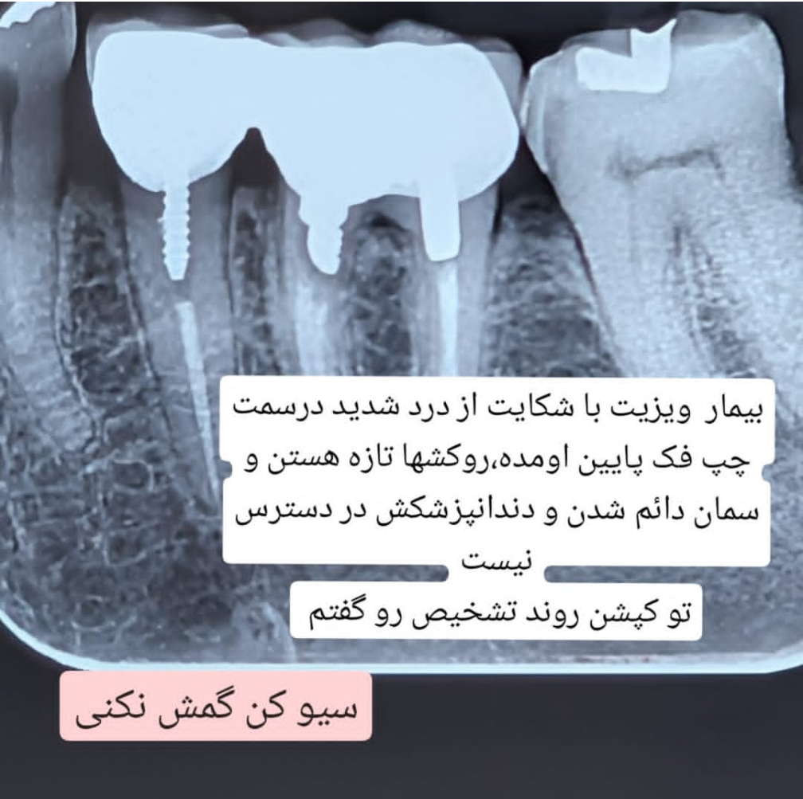

📸 فوتوکست ۱ – بیمار با درد شدید در ناحیه چپ فک پایین پس از روکش تازه

🔍 تحلیل بالینی و تشخیص منشأ درد
سعی کردم درد را بازسازی کنم.
دندان ۶ درگیری فورکا دارد، اما با بردن سوند درد عیناً بازسازی نشد.
با بردن سوند بین دو روکش متصل نیز درد بازسازی نشد.
با بردن نخ دندان بین دندانهای ۴ و ۵، درد بازسازی شد.
مشکل و منشأ درد از باز بودن کانتکت است.
🩹 گزینههای اصلاح درمان و پروتکل
دو راه برای اصلاح وجود دارد: خارج کردن دو روکش متصل (با پذیرش احتمال کشیدنی بودن دندان ۶) و سپس درمان پروتزی با کانتکت صحیح.
گزینه دیگر، اضافه کردن کامپوزیت به دیستال دندان ۴ است؛ اگر فضا کم باشد، شاید بتوان از مزیال روکش ۵ کمی پرسلن حذف کرد تا فضا برای کامپوزیت ایجاد شود.
⚠️ احتیاطات و ملاحظات نهایی
فقط باید دقت کرد که این روکشها کار خود ما نیستند و هرگونه دستکاری در آنها ممکن است تبعات بعدی داشته باشد.